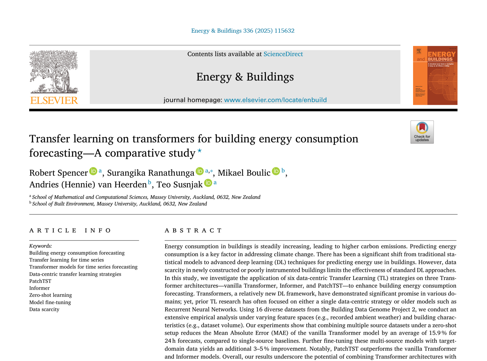

Research · First-author publication
Forecasting energy use across buildings
15.9%
lower 24h MAE
16
building datasets
Q1
journal (2025)
New buildings often lack enough historical data to train reliable forecasting models. I investigated how time-series transformer models can transfer knowledge from other buildings.
Combining multiple source datasets in a zero-shot setup reduced 24-hour forecast error by an average of 15.9% compared with single-source baselines using the vanilla Transformer.
Methods and citation
Compared PatchTST, vanilla Transformer and Informer across 16 building datasets from the Building Data Genome Project 2. Evaluated zero-shot and fine-tuning approaches; the 15.9% result uses a multi-source zero-shot setup.
Published in Energy and Buildings (Q1 journal, 2025).
